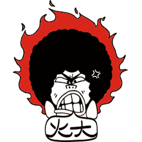

Dive into MDE
Keep Foolish, Stay Hungry!
Outline
- 为什么做技术分享？
- OOP的必知必会
- MDE
- Business Value
为什么做技术分享？
学习意识
孔子曰：「生而知之者，上也；學而知之者，次也；困而學之，又其次也；困而不學，民斯為下矣。」
为什么做技术分享？
悔和自省
曾子曰：「吾日三省吾身：為人謀而不忠乎？與朋友交而不信乎？傳不習乎？」
阳明曰：“悔悟是去病之药，然以改之为贵。若留滞于中，则又因药发病。”
OOP的必知必会
A-E-I-P

OOP的必知必会
A-E-I-P
- Abstraction: provide the essential features and hiding the details of the implementation from the outside.
- Encapsulation: restricting access of some of the fields and method of a class from the outside world and binding together related data and methods.
- Inheritance: collect common features in a common class and defines a relationship between two classes is(-a-type-of)-a.
- Polymorphism: invoke the same operation on objects of different classes that have the same parent class and they will all perform it in their own way.
OOP的必知必会
Business Use Case
A business Use Case Diagram depicts a model of several business goals which represents the interactions between the business system and its primary stakeholders (business actors and business workers).
Keypoints:
- System Boundary
- Goals
- Stakeholders
OOP的必知必会
Patterns
- Association: An association simply describes any kind of working relation. The two object are instances of completely unrelated classes, and none of the object control the lifecycle of the other one. They just collaborate to accomplish their own goals.
- Aggregation: describes a relationship in which one object belongs to another object and implies a relationship where the child can exist independently of the parent.
- Composition: describes a relationship in which one object completely controls another object that has not an independent lifecycle.
OOP的必知必会
Patterns
- Interface: also known as protocol, is an alternative to inheritance for two unrelated classes to communicate with each other.
- Delegation: is a way to make composition as powerful for reuse as inheritance. In delegation, two objects are involved in handling a request: a receiving object delegates operations to its delegate.
OOP的必知必会
Principles
OOP的必知必会
Principles
- SRP: Every object should have a single responsibility, i.e. a single reason to change.
- OCP: Objects should be open for extension, but closed for modification.
- LSP: You should be able to use any derived class in place of a parent class and it should behave in the same manner with no modification.
- ISP: Clients should not be forced to depend on interfaces they do not use. Encourage to splits interfaces that are very large into smaller and more specific ones
- DIP: Classes should depend on abstractions for their dependencies. Basically, they say that classes should rely on interfaces or abstract classes for any outside dependencies they need, and not instantiate concrete objects themselves.
MDE
渊源
- 行业背景（被动）
- 开源系统（主动）
- 懒（天性）
MDE
M-E
MDE
M-E

MDE
M-E
Game Engine: a suite of tools in
addition to reusable software components. These
tools are generally provided in an integrated
development environment to enable simplified, rapid
development of games in a data-driven manner. Game
engine developers attempt to "pre-invent the wheel"
by developing robust software suites which include
many elements a game developer may need to build a
game. Most game engine suites provide facilities
that ease development. These game engines are
sometimes called "middleware" because, as with the
business sense of the term, they provide a flexible
and reusable software platform which provides all
the core functionality needed, right out of the box,
to develop a game application while reducing costs,
complexities, and time-to-market.
MDE
Keypoints
Goto P4,P9 of mde.key
Business Value
Business Value
Value:
- Shareholder Value
- Customer Value
- Employee knowledge
- Usability
- Functionality
- Availability
- Reliability, recoverability
- Performance (throughput, response time, predictability, capacity, etc.)
- Security
- Agility
干漂亮得！
干得漂亮！